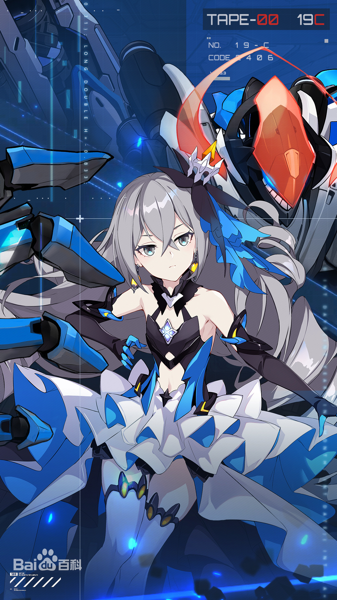

绝对的理性——布洛妮娅·扎伊切克
布洛妮娅·扎伊切克，手机游戏《崩坏三》及其衍生作品中角色，前天命B级女武神，现第一律者·理之律者。
第二次崩坏中成为孤儿，被军队培养成著名杀手乌拉尔银狼。一次暗杀可可利亚任务失败后，被可可利亚收养。X-10实验中和量子化的希儿立下将其带回现实的约定，进而和可可利亚引发第三次崩坏。
为从被圣芙蕾雅学园带走的雷电芽衣处找到带回希儿的方法，布洛妮娅进入学园。因月光王座事件和第四律者事件，布洛妮娅和可可利亚离心。海渊城事件中，因可可利亚和世界蛇的合作，导致海渊城陷落，面对目前唯一能和量子之海连通的海渊之眼，布洛妮娅毅然跳入其中。
在量子之海的入口“认知回廊”中，布洛妮娅通过了杨设下的三个考验，继承了理之核心，成为新一代理之律者。

